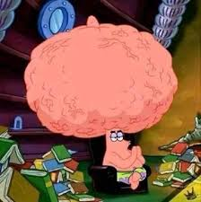

Quotes
The Basics
Merchandise
This part of the website has wisdom passed from generations of spongebob oh and also some random wacky nonsense. (This page is under water.)
- “If you believe in yourself, with a tiny pinch of magic all your dreams can come true!” — SpongeBob
- "Order Up!" — SpongeBob
- “Ravioli ravioli. Give me the formuoli.” - Spongebob
- “This is not your average, everyday darkness. This is… ADVANCED darkness. Hey, if I close my eyes it doesn't seem so dark.” — SpongeBob
- “Gary, I'm absorbing his blows like I'm made of some sort of spongy material.” — SpongeBob
- “Barnacles!” — SpongeBob
- “The Krusty Krab pizza is the pizza for you and me.” — Spongebob
- “Run Mr. Krabs! Run like you're not in a coma!” - SpongeBob
- “Moss always points to civilization.” — SpongeBob
- "Can I be excused for the rest of my life?" — SpongeBob
- “If I were to die right now in a fiery explosion due to the carelessness of a friend…. Then it would just be alright.” - Spongebob
- “I'm so loyal, I don't mind sleeping out in the cold, hard ground while Captain Krabs sleeps in his warm, dry tent.” - SpongeBob
- “I'm a good noodle!” — SpongeBob
If you find these geniuse words of advice realy helpful. Then check out google.com and search up "geniuse quotes about life" and you'll find enough quotes to make you really smart. Here's an example of what could happen if you were to do this...

Image on Planet Woo by unknown
THAT'S NOT SPONGEBOB